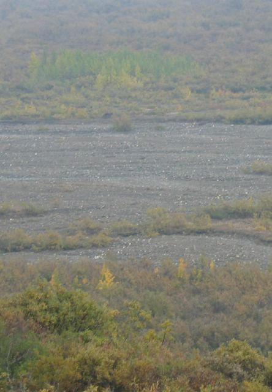

First |
Previous Picture |
Next Picture |
Last |
------------------------------ |
PICTURES HOME |
BORIS HOME

Esa mancha negra en la parte de arriba de la foto es un lobo super grande que viajaba lejos de nosotros. Se veia mucho mejor con binoculares
picture_091.jpgtest